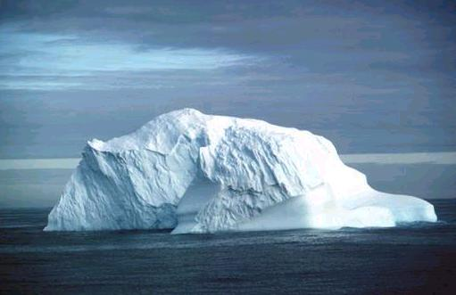
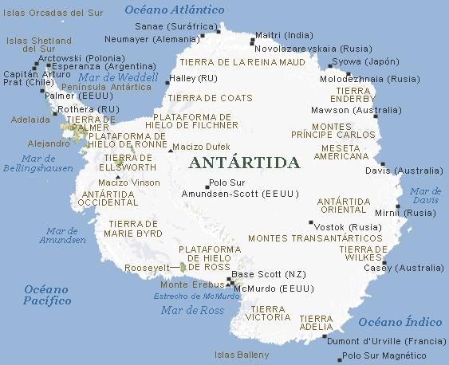

Antártida
Antártida, cuarto continente más grande del mundo, situado casi en su totalidad al sur de los 66°30’ latitud S (el círculo polar antártico), que rodea al polo sur. En general, su forma es circular con un largo brazo —la península Antártica—, que se prolonga hacia América del Sur, y dos grandes escotaduras, los mares de Ross y Weddell y sus plataformas de hielo. Su extensión total es de aproximadamente 14,2 millones de km2 en verano. Durante el invierno, la Antártida dobla su tamaño a causa de la gran cantidad de hielo marino que se forma en su periferia. El verdadero límite de la Antártida no es el litoral del continente en sí mismo, sino la Convergencia Antártica, que es una zona claramente definida en el extremo sur de los océanos Atlántico, Índico y Pacífico, entre los 48° y los 60° latitud S. En este punto, las corrientes frías que fluyen hacia el Norte desde la Antártida se mezclan con corrientes más cálidas en dirección Sur. La Convergencia Antártica marca una clara diferencia física en los océanos. Por estas razones el agua que rodea al continente antártico se considera un océano en sí mismo, a menudo llamado océano Glacial Antártico o Meridional.
La Antártida no tiene población nativa. Los científicos y grupos de apoyo, que normalmente no permanecen más de un año, son sus únicos habitantes. La primera persona que nació en la Antártida fue Emilio Palma, el hijo del comandante de la base argentina de Esperanza, el 7 de enero de 1978.
Más del 95% de la Antártida está cubierto de hielo, que contiene cerca del 90% de toda el agua dulce del mundo. Debido a esta gruesa capa de hielo, es el más alto de todos los continentes, con una elevación media de unos 2.300 m. El punto más elevado del continente es el macizo Vinson (5.140 m); el más bajo parece ser la fosa subglaciar de Bentley (a 2.499 m bajo el nivel del mar), al oeste de la Antártida. Esta fosa está cubierta por más de 3.000 metros de hielo y nieve. Es posible que existan puntos aún más bajos, pero todavía no han sido descubiertos.
Siete países (Argentina, Australia, Chile, Francia, Gran Bretaña, Nueva Zelanda y Noruega) reivindican la soberanía de ciertos territorios de la Antártida, pero desde el Tratado Antártico de 1961 estas demandas han sido abandonadas en favor de la cooperación internacional en las investigaciones científicas.
La península Antártica
es el hogar del pingüino de Adelia, que pasa gran parte de su vida en las
banquisas de las aguas cercanas a la península y regresa a la tierra
firme para aparearse. La península constituye el extremo más septentrional
de la Antártida y se extiende más allá del círculo
polar antártico, hacia Sudamérica.
La Antártida actual sufre una etapa glaciar. El futuro desarrollo económico
de este continente cubierto de hielo es muy poco probable. La explotación
de los recursos de la placa continental es posible, pero desde luego no hasta
dentro de muchos años. La fauna marina de las aguas que rodean la Antártida
está siendo aprovechada económicamente en la actualidad. Dicha
fauna incluye a las ballenas y a un pequeño animal, parecido a un camarón,
llamado krill.

2.1 Historia geológica
La Antártida fue la parte central de un antiguo continente, Gondwana. Cuando Gondwana se separó a finales del mesozoico y principios del cenozoico (hace unos 100 millones de años) para formar los continentes del hemisferio sur, la Antártida derivó desde la zona tropical hasta su actual posición polar.
2.2 Regiones fisiográficas
Picos cubiertos de hielo,
Antártida Los montes Transantárticos dividen el continente de
la Antártida en una parte oriental, poco accidentada, y otra occidental,
de menor extensión y en la que se elevan varias alineaciones montañosas
hasta la península de la Antártica, cuyos picos sobresalen entre
los glaciares y la gruesa capa de hielo que cubre el continente.
La Antártida consta de dos importantes zonas geológicas. La más
grande de las dos, la Antártida oriental, se extiende en su mayoría
por el hemisferio este. Es probablemente un escudo precámbrico cubierto
por miles de metros de hielo. La era precámbrica transcurrió desde
hace 570 millones hasta hace 400 millones de años. La Antártida
occidental, casi totalmente dentro del hemisferio oeste, parece ser una continuación
de la cordillera de los Andes; glaciólogos y geólogos especulan
con la posibilidad de que la Antártida occidental se convirtiera en un
archipiélago en caso de que la capa de hielo se retirara.
Las dos zonas de la Antártida están separadas por los montes Trasantárticos, una elevada zona montañosa que se extiende por todo el continente, aunque algunas partes están enterradas bajo la capa de hielo. En el interior de estas montañas existen depósitos de carbón y restos fósiles relacionados con el originario clima tropical.
La Antártida oriental, un escudo precámbrico geológicamente estable, está cubierta de depósitos sedimentarios e ígneos. La estructura geológica de la Antártida occidental se conoce peor, pero al menos existen dos volcanes activos en el área, el más alto de los dos es el monte Erebus (3.794 m). Los suelos antárticos se clasifican como suelos secos de desierto polar, y se encuentran en varios valles en desglaciación (sin hielo) u oasis y en partes del norte de la península Antártica.
2.3 Drenaje y recursos hidrográficos
Iceberg de la Antártida La superficie de la Antártida está cubierta por un extenso manto o capa de hielo. Junto al mar, los bordes de los casquetes glaciares se desgajan y dan lugar a la aparición de gigantescas masas de hielo flotantes, parcialmente sumergidas, conocidas como icebergs, que se desplazan a merced de los vientos y corrientes marinas. En la Antártida, los icebergs son generalmente tabulares.
La capa de hielo de la Antártida se mueve continuamente. Grandes ríos de hielo drenan el interior del continente y forman barreras de hielo. Los valles costeros drenan partes de la masa continental hacia el mar. Los grandes icebergs tabulares se forman cuando los bordes de las barreras de hielo y los glaciares caen al mar. El hielo se extiende por enormes áreas del mar en forma de plataformas flotantes y permanentes, y la más grande de estas formaciones, la plataforma de hielo de Ross, tiene un tamaño cercano al de España y Portugal juntos.
Icebergs antárticos Los icebergs son grandes porciones flotantes de los glaciares, muy frecuentes en las regiones polares. Estas espectaculares formaciones de hielo resultan un problema para la navegación: el 90% de su masa se esconde bajo su superficie, y es imposible reflejarlos en las cartas náuticas al estar desplazándose constantemente.
El aislamiento de la Antártida del resto del mundo ha permitido evitar la polución industrial común a los demás continentes, por ello la nieve y el hielo son los más puros del mundo. En la mayoría de las estaciones científicas el agua que se necesita se consigue mediante fundidores de hielo.
2.4 Clima
Antártida: mapa climático
La Antártida, donde se ha registrado la temperatura más baja de
la tierra (-88,3 ºC) es el continente más frío. Aunque el
clima es uniforme, las precipitaciones son variables, siendo mínimas
en la zona desértica interior. Los fuertes vientos elevan la nieve desde
las regiones costeras y la depositan en el interior.
La Antártida es el continente más frío. La temperatura
más baja del mundo, -88,3 °C, fue registrada el 24 de agosto de 1960,
en la estación Vostok. Además, fuertes vientos azotan el continente.
En el interior se han registrado vientos de hasta 320 km/h. Estos vientos soplan
en pendiente desde el interior hacia la costa y, combinados con las bajas temperaturas,
crean peligrosas ráfagas de viento helado.
Se pueden distinguir tres regiones climáticas en la Antártida. El interior se caracteriza por un frío extremo y ligeras nevadas; las zonas costeras experimentan temperaturas algo más suaves y niveles de precipitaciones mucho más altos, y la península Antártica tiene un clima mucho más cálido y húmedo en el que son habituales las temperaturas sobre cero.
La Antártida se puede definir como un auténtico desierto; en el interior la media de precipitaciones anuales (en forma de lluvia) es de sólo 50 mm. Sin embargo, a menudo hay furiosas ventiscas cuando los vientos recogen nieve previamente depositada y la trasladan de un lugar a otro. Las precipitaciones anuales son mucho más abundantes en la costa, donde alcanzan unos 380 mm de agua de lluvia. Aquí hay fuertes nevadas cuando los ciclones recogen la humedad de los mares de alrededor; esta humedad se hiela y se deposita en forma de nieve sobre las zonas costeras. En la península Antártica, especialmente en el extremo norte, la lluvia es tan común como la nieve.
El interior de la Antártida tiene día perpetuo durante el verano del hemisferio sur y oscuridad durante el invierno. En las zonas costeras, más al norte, hay largos periodos de insolación durante el verano, pero durante gran parte del resto del año se suceden los amaneceres y anocheceres.
2.5 Flora
Las pocas plantas que sobreviven en este continente están restringidas a pequeñas áreas sin hielo. No hay árboles y la vegetación se limita a 350 especies, sobre todo líquenes, musgos y algas. Hay ricos lechos de tal vegetación en partes de la península Antártica, y se han descubierto líquenes en crecimiento en montañas aisladas a 475 km del polo sur. Hay tres especies de plantas con flores en la península Antártica.
2.6 Fauna
Pingüinos en la isla Paulet Algunas especies de pingüinos habitan la región de la Antártida. Lo que aparece en la vista de 360º es una colonia de pingüinos Adelia, en la isla de Paulet, situada en las proximidades del extremo septentrional de la península.
Ningún animal vertebrado terrestre habita la Antártida. Se pueden encontrar invertebrados, especialmente ácaros y garrapatas, que pueden tolerar las bajas temperaturas, pero todavía se consideran poco comunes. Los océanos circundantes, sin embargo, contienen gran cantidad de vida animal. Un enorme número de ballenas se alimentan de la rica fauna marina, especialmente de krill. Seis especies de focas (incluida la cangrejera, la elefante y la leopardo) y cerca de doce especies de aves viven y se reproducen en el continente antártico. El habitante más eminente de la Antártida es el pingüino. El pingüino es un pájaro incapaz de volar que vive en las banquisas y los océanos alrededor de la Antártida, y se reproduce en las superficies de hielo o tierra de la costa. Los más típicos son el pingüino de Adelia y el emperador.
2.7 Minería
Se cree que en la Antártida existen grandes depósitos de valiosos recursos minerales. Se ha descubierto carbón en depósitos comercialmente atractivos, pero no se sabe de la existencia de ningún mineral en cantidades potencialmente útiles. Se cree que existen grandes depósitos de petróleo y gas en la plataforma continental antártica.
La Antártida no fue descubierta hasta principios del siglo XVIII, en gran parte a causa de su alejamiento de los otros continentes. Los antiguos griegos fueron los primeros en teorizar sobre la existencia de la Antártida cuando supusieron que en el hemisferio sur debían existir grandes continentes para equilibrar los del hemisferio norte. El capitán de navío británico James Cook fue el primer explorador en cruzar el círculo polar antártico a partir de 1770, pero, aunque circunnavegó la Antártida, nunca avistó el continente. Cook se dio cuenta de que existía un continente meridional por los depósitos de rocas en los icebergs, pero no era el exuberante y poblado lugar que algunos esperaban.
3.1 Primeras exploraciones
De 1819 a 1821, una expedición rusa bajo el mando del oficial naval y explorador Fabian von Bellingshausen circunnavegó la Antártida y descubrió algunas islas cercanas a la costa. Probablemente los primeros grupos en avistar el continente fueron el del cazador de focas estadounidense Nathaniel Palmer y el de los oficiales navales británicos William Smith y Edward Branfield; ambos navegaron cerca de la punta de la península Antártica en 1820. El primer desembarco conocido fue realizado el 7 de febrero de 1821 por otro cazador de focas estadounidense, el capitán de navío John Davis. En 1823 el ballenero británico James Weddell descubrió el mar que lleva su nombre y penetró hasta el punto más meridional que ningún barco hubo alcanzado jamás.
Sin embargo, sólo se concedió el rango de continente a la Antártida a partir de 1840. Tres expediciones nacionales separadas —una expedición francesa a cargo de Jules Dumont d’Urville, una expedición británica al mando de James Ross y una estadounidense dirigida por el capitán de navío Charles Wilkes— navegaron un trecho de costa suficiente como para darse cuenta de que la tierra cubierta de hielo que vieron era realmente una masa continental.
Desde finales del siglo XIX hasta principios del siglo XX numerosas expediciones visitaron la Antártida. Con el estímulo del Congreso Geográfico Internacional varias naciones enviaron expediciones, como la belga, dirigida por Adrien de Gerlache; la británica, dirigida por Robert Scott y Carsten Borchgrevink y la alemana, dirigida por Erich von Drygalski. Gerlache llevó su expedición, la primera realmente científica, a la parte del océano Pacífico de la península Antártica; quedó atrapado en el hielo y pasó el invierno de 1897-1898 allí. La expedición de Borchgrevink desembarcó en 1899 en cabo Adare y se convirtió en el primer grupo de hombres que pasó un invierno en tierra. La expedición de Scott en 1901-1904 usó la isla Ross en el estrecho de McMurdo como base y exploró la plataforma de hielo de Ross y la Tierra Victoria. Desde 1901 a 1903, Drygalski, que era geofísico, guió una expedición por la costa del océano Índico de la Antártida. Scott y Drygalski llevaron globos cautivos y los utilizaron para la observación aérea de la superficie de la Antártida. En esa época también hubo expediciones bajo patrocinio privado: desde Suecia, dirigida por Otto Nordenskjöld; desde Escocia, dirigida por William Bruce, y desde Francia, dirigida por Jean Charcot.
3.2 La conquista del polo sur
Exploración de la
Antártida Dirigidos por Robert Scott, una expedición británica
partió en 1910 con el objetivo de alcanzar el polo sur. Aunque Scott
y cuatro de los miembros de la expedición llegaron a éste el 18
de enero de 1912, todos ellos murieron en el viaje de vuelta. Esta fotografía
muestra a dos miembros de la expedición en la gruta de un iceberg en
la Antártida, y su barco, llamado Terra Nova, al fondo.
La búsqueda del polo sur fue el propósito dominante en la siguiente
serie de expediciones antárticas. De 1907 a 1909, Ernest Shackleton encabezó
una expedición británica que llegó a 156 kilómetros
de distancia del polo sur antes de verse obligado a regresar por la falta de
provisiones.
Una segunda expedición británica, dirigida por Robert Scott, entró en escena en 1910, al igual que la expedición noruega comandada por Roald Amundsen. Con la ayuda de trineos arrastrados por perros, Amundsen y cuatro miembros de su expedición llegaron al polo sur el 14 de diciembre de 1911. Scott y los cuatro miembros de su equipo llegaron al polo el 18 de enero de 1912, tras arrastrar sus trineos durante la parte más difícil de su ruta. Todos los miembros del grupo de Scott murieron en el viaje de vuelta después de que los noruegos regresaran a su base con éxito. Shackleton volvió a la Antártida en 1914 para intentar cruzar el continente, pero su barco, el Endurance, quedó atrapado en el hielo y fue aplastado. Shackleton y sus hombres volvieron a la isla Elephant, después de cruzar los témpanos de hielo, y finalmente fueron rescatados en agosto de 1916.
3.3 Exploración aérea
Expedición Transantártica,
1957 La Expedición Transantártica de la Commonwealth, desarrollada
entre 1957 y 1958, es un ejemplo típico de las muchas expediciones realizadas
en las últimas décadas: dado que todos los lugares del mundo han
sido ya explorados, los exploradores tratan de ser los primeros en hacer algo
diferente e innovador. Fue especialmente preparada y meticulosamente planeada,
en contraste con la improvisación que caracterizó a las empresas
de este tipo puestas en marcha durante los siglos anteriores.Express Newspapers/Archive
Photos
En la década de 1920, la aviación llegó a la Antártida.
El australiano George Wilkins y el estadounidense C. B. Eielson fueron los primeros
en sobrevolar el continente en avión cuando exploraron la península
Antártica desde el aire en 1928. El explorador estadounidense Richard
Evelyn Byrd estableció un gran campamento —Little America (la Pequeña
América)— en la plataforma de hielo de Ross a principios de 1929
y en noviembre voló al polo sur. Byrd regresó a la Antártida
en 1934 con otra expedición. Ambas expediciones incluyeron personal de
investigación científica.
Otras expediciones aéreas importantes fueron las dirigidas por el estadounidense Lincoln Ellsworth, que atravesó el continente en 1935; por los noruegos, que condujeron una gran expedición a lo largo del litoral; por los alemanes, que enviaron una expedición aérea en 1938 y 1939; y por la expedición del Servicio Antártico Estadounidense entre 1939 y 1941.
Tras la II Guerra Mundial, los Estados Unidos enviaron la expedición más grande a la Antártida: más de 4.000 personas, apoyadas por trece barcos y más de veinte aviones, participaron en la ‘operación Salto de Altura’, y buena parte de la costa fue fotografiada para preparar mapas.
3.4 Acontecimientos recientes
Vivian Ernest Fuchs Experto
geólogo, Fuchs fu escogido para encabezar la Expedición Transantártica
de la Commonwealth (1957-1958), que llevó a cabo importantes prospecciones
geológicas y otros trabajos científicos mientras duró la
travesía del continente blanco. Fuchs recibió el título
de caballero tras la expedición.
Richard Byrd en la Antártida
En la etapa final de su vida fue cuando Richard Byrd se hizo famoso por sus
cinco expediciones a la Antártida, en las que sobrevoló el polo
sur y exploró grandes áreas de este territorio inhóspito.
En su segunda expedición (1933-1935) permaneció sólo en
una pequeña cabaña durante todo un invierno, en concreto, a lo
largo de cinco meses.
Las exploraciones científicas y sistemáticas a largo plazo de
la Antártida comenzaron con el Año Geofísico Internacional
(AIG) —del 1 de julio de 1957 al 31 de diciembre de 1958. Doce países
establecieron más de sesenta estaciones científicas en la Antártida
durante el AIG y recorrieron la mayor parte del continente. Cuando el AIG llegó
a su fin, las doce naciones decidieron continuar sus investigaciones durante
el año de Cooperación Geofísica Internacional. Los representantes
de dichos estados se reunieron en Washington, Estados Unidos, en 1959 para redactar
y firmar el Tratado de la Antártida, que decidió dedicar el continente
austral por entero a la investigación científica con fines pacíficos;
el acuerdo entró en vigor en 1961, y por él se suspendieron todas
las demandas territoriales. En 1978 se celebró la Convención para
la Conservación de las Focas Antárticas. En 1991, 24 países
aprobaron en Madrid un protocolo al Tratado que prohibía la explotación
petrolífera o de cualquier otro mineral durante al menos 50 años,
si bien no se logró pleno consenso para declarar a la Antártida
parque natural mundial. Y en 1994, ante el peligro que suponía su caza
indiscriminada, se acordó crear un santuario antártico para las
ballenas.
4. Investigaciones científicas
En la Antártida se han realizado notables investigaciones científicas entre las que se incluyen estudios de glaciología, meteorología, geomagnetismo, control del clima mundial, sismología y física ionosférica. Los océanos ricos en nutrientes que rodean la Antártida son un importante foco de investigación. Los biólogos han descubierto que los peces de aguas antárticas tienen un componente anticongelante en su sangre que les permite soportar temperaturas bajo cero. Estudios realizados sobre la historia biológica de pingüinos, focas y krill (una potencial fuente de alimento mundial) han proporcionado información nueva sobre la ecología de estas especies. Estudios de carácter internacional han mejorado la comprensión de la reproducción del krill y han permitido a los científicos mejorar sus predicciones sobre los límites seguros para la recolección de este animal.
Los geólogos han reconocido las zonas de rocas más expuestas del continente, incrementando el conocimiento sobre las estructuras geológicas básicas y la historia de la Antártida. Los geólogos glaciares, que estudian los restos del pasado de los glaciares, han descubierto que la Antártida contuvo en alguna época mucho más hielo del que contiene ahora. Los restos fósiles hallados incluyen logros como el descubrimiento de los primeros restos de mamíferos encontrados allí, en 1982, y, el hallazgo del primer dinosaurio fosilizado en 1986. Fósiles de este tipo han proporcionado hasta ahora una secuencia casi completa de la separación del antiguo continente Gondwana. Los vulcanólogos han estudiado extensamente el monte Siple y el volcán en activo del monte Erebus. Los geólogos han recogido miles de meteoritos (incluyendo unos pocos y raros fragmentos lunares), apreciados especialmente por haberse preservado a salvo en el hielo de la acción de los elementos u otros deterioros.
Incluso la capa de hielo ha sido materia de intenso estudio durante mucho tiempo. Los glaciólogos de varios países han empleado modernos métodos de investigación como la radioglaciología para obtener información sobre el paisaje debajo de la capa de hielo y descubrir grandes lagos entre el suelo y el fondo del hielo. Los satélites han sido utilizados para trazar el lento movimiento de la superficie de hielo. Los núcleos de hielo de la Antártida dispuestos en hileras, que incluyen un núcleo completo al fondo de la plataforma de hielo de Ross y uno a través del hielo de la Antártida occidental en la estación Byrd, permitieron a científicos franceses, rusos y estadounidenses trazar los cambios climáticos en el continente a lo largo de un periodo de miles de años. Los científicos franceses han colocado radiotransmisores en los icebergs para seguir su movimiento y representantes de los gobiernos de Arabia Saudí y Australia han considerado la posibilidad de remolcar icebergs a regiones áridas necesitadas de agua.
Los científicos también han realizado estudios sobre el calentamiento global del continente. En 1995 surgió un número extraordinariamente grande de icebergs, alterando radicalmente las dimensiones de la placa de hielo.
Los expertos meteorológicos han realizado continuos registros durante alrededor de veinticinco años que proporcionan datos sobre la función de la Antártida en el clima mundial. Una de esas contribuciones ha sido el descubrimiento, observado por primera vez por científicos británicos en 1985, del llamado ‘agujero en la capa de ozono’, que se desarrolla cada primavera antártica en la estratosfera por encima del continente y que desaparece total o parcialmente al final de la estación. El significado de esta reducción en la capa de ozono en las cercanías del polo sur continúa en estudio. Puede ser un fenómeno natural en parte, pero la evidencia indica que la pérdida de ozono está relacionada con el problema de la liberación de clorofluorocarbonos a la atmósfera.
Se han hecho grandes descubrimientos acerca del comportamiento de los virus en un entorno frío y aislado. A menudo durante el invierno, cuando la Antártida está aislada del mundo exterior, se realizan experimentos psicológicos y estudios sobre el sueño.
